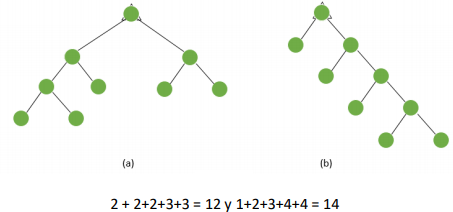

Una de las aplicaciones más directas de los arboles binarios se presenta en procedimientos
investigativos, cada vértice de un árbol binario representa una pregunta con dos posibles
resultados. Para realizar una investigación mediante arboles binarios, comenzamos por la raíz
y el resultado de la pregunta que corresponda a la raíz nos envía a uno de los vértices del nivel
1, donde con nuevos informes otra pregunta formulada y su resultado nos lleva a uno de los
dos vértices del nivel 2: continuamos este procedimiento hasta alcanzar un vértice pendiente.
lo cual nos conduce al final de la investigación.
En el análisis estos procedimientos investigativos generalmente es importante calcular la
suma de los niveles de todos los vértices penitentes.
Esta cantidad se llama LA LONGITUD DE LA CADENA DEL ARBOL. Así, por ejemplo, la longitud
de la cadena del árbol binario de la figura 3(a) y 3(b) son respectivamente.

La importancia del cálculo de la longitud de la cadena de un árbol binario radica en el hecho
que esta cantidad está a menudo relacionada con el tiempo de realización o el costo de la
investigación.